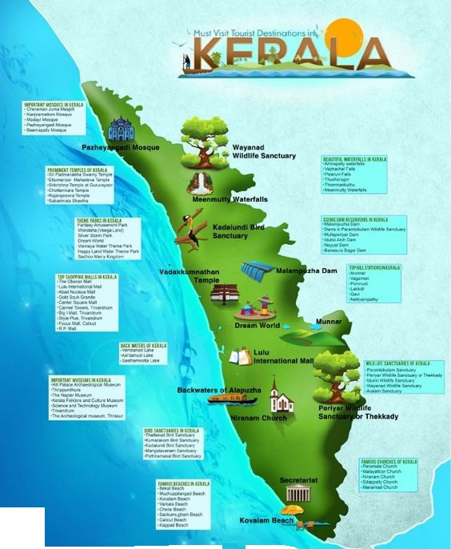

About Kerala


Kerala, known as "God's Own Country," is a state located in the southwestern region of India. Renowned for
its scenic landscapes, diverse wildlife, and rich cultural heritage, Kerala has emerged as one of the top
tourist destinations in the world. The state's unique geography, with its lush green hills, serene
backwaters, and pristine beaches, offers a variety of experiences for travelers seeking both adventure and
relaxation.
Natural Beauty and Landscapes
Kerala's natural beauty is its primary allure. The Western Ghats, a UNESCO World Heritage site, run along
the eastern border, providing a dramatic backdrop to the state's hilly terrain. These mountains are home to
several wildlife sanctuaries and national parks, such as Periyar and Eravikulam, where visitors can spot
elephants, tigers, and a plethora of endemic bird species. The state's extensive network of backwaters,
including the famous Alleppey and Kumarakom, offers tranquil boat cruises that allow tourists to immerse
themselves in the region's serene environment.